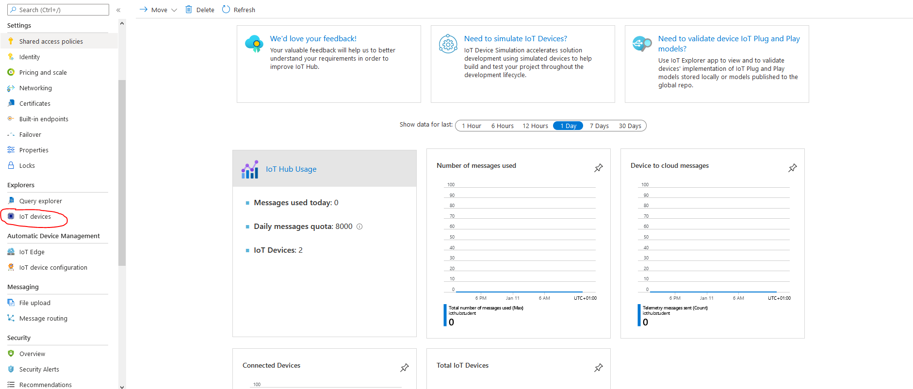
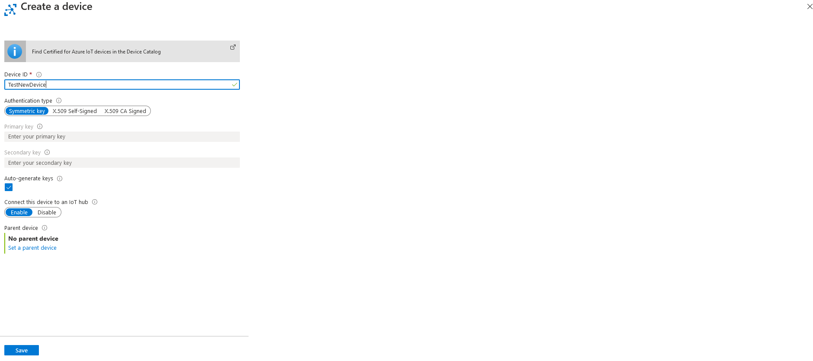
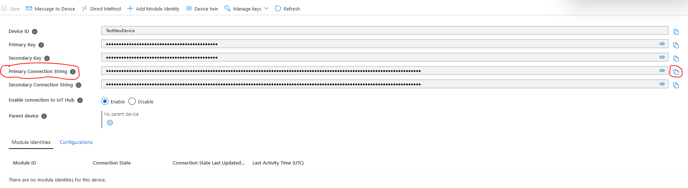

IoT Hub
Opis
Iot Hub jest to serwis zarządzania, znajdujący się w chmurze Azure. Do jego zadań należy jest spełnianie funkcji centralnego panelu zarządzania komunikacją dwustronną pomiędzy urządzeniami IoT a aplikacjami je wykorzystującymi. Azure IoT pozwala nam na zapewnienie stabilnej i bezpiecznej komunikację pomiędzy milionami urządzeń IoT i rozwiązaniami backendowymi. Do IoT Hub możemy podłączyć każdy rodzaj urządzenia.
Funkcje IoT Hub: - Skalowanie rozwiązań - Zabezpieczenie komunikacji - Wpudowane funkcje routowania wiadomości - Integralność z innymi serwisami Azure - Łatwa konfiguracja i kontrola nad urządzeniami.
Koszty: - Dzięki studenckiej wersji próbnej Azure, możemy skorzystać z wersji bezpłatnej IoT Hub do której zalicza się możliwość wysyłania 8000 komunikatów dziennie.
Stworzenie środowiska
Stworzenie środowiska jest bardzo proste. Opisane jest bardzo dobrze na oficjalnej stronie Azure'a.
Nasze rozwiązanie nie jest zależne od konkretnego panelu IoT Hub. Jedyne co jest potrzebne to tzw. CONNECTION STRING, który pozwala na przyłączenie urządzenia do IoT Hub. Z tego powodu każdy z członków zespołu stworzył swój własny panel IoT Hub do własnego użytku.
Dodanie nowego urządzenia
Wejdź w swój panel IoT Hub i wejdź w pole "IoT Devices".

Ukaże ci się panel z wszystkimi dostępnymi urządzeniami IoT, które posiadasz. Aby dodać nowe urządzenie, wybierz opcję "New".

Jedyne co potrzebujemy zdefiniować to nazwa nowego urządzenia. Zapisz ustawienia i po krótkiej chwili ukaże się nam panel z urządzeniami, na którym możemy zaobserwować nowe dodane urządzenie. Wybierz nowe urządzenie, i skopiuj z niego pole "Primary Connection String".

Jedyne co nam pozostało to zadeklarować parametr Primary Connection String jako zmienna środowiskowa na urządzeniu pod nazwą:
export DEVICE_CONN_STRING='Primary Connection String'
Nowe urządzenie IoT jest skonfigurowane i gotowe do pracy z systemem. Pobierz repozytorium, wejdź do katalogu IoTAzurePi/Device i rozpocznij jego pracę za pomocą komendy:
python3 main.py